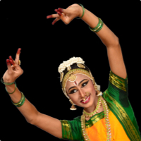

Raagam: Vijayavasantham, Taalam: Adi, Composer: Sri. Madurai R. Muralidharan, Language: Tamil
Pushpanjali is an offering of flowers. In sanskrit, pushpam means "flower" and anjali means "offering with folded hands". Pushpanjali means offering of flowers with folded hands. Its just not a personal prayer but it is performed to propitiate the Gods for the benefit of the Universal well being. It is an invocatory dance where the dancer offers her salutations to God, guru, musicians and the audience. It is accompanied by a Shloka to receive the blessing of the supreme.

Alarippu
Taalam: Misra Triputa, Composer: Sri. Madurai R. Muralidharan
Alarippu marks the traditional commencement of a Bharathanatyam recital. It means flowering. It is a pure nritta item (body movements) based on taala (rhythm) and the dancer offers her respect to the God, Guru and the audience. It can be performed for any taala cycle.
Jatiswaram
Raagam: Chakravakam, Taalam: Rupakam, Composer: Sri. Dhandayuthapani Pillai
Jatiswaram is an ornamental dance of nritta, or pure rhythmic segments. There is no overt meaning except the presentation of form and line, demonstrated in passages of complex rhythmic phrasing. Bharathanatyam is characterized by linear angularity and finds commonality with the grand gopuras (temple towers) of South India. The dancer weaves the rhythms with the architecture of the adavus (dance steps). Each phrasing culminates in theermanams or concluding triple flourishes.
Shabdam (Goverdhana Giri)
Raagamaalika, Taalam: Misrachapu, Language: Tamil, Composer: Sri. Madurai R. Muralidharan
Shabdam means words of praise. It is a piece in which the deity is praised for his benevolent qualities. This Sabdham narrates how gopas and gopis relishes their time in Krishna’s sweet speech and baby walk in vrindavan. He lures the heart of gopis, gopas, animals and birds with his lilting flute music. His heart is filled with compassion towards his devotees in despair. He has unique way of stealing their sorrows too.
Varnam (Aadum mayil mel varuvan)
Raagam: Shuddha Dhanyasi, Taalam: Adi, Language: Tamil, Composer: Sri. Madurai R. Muralidharan
The Six faced Subramanya’s beauty, his valor, his virtue, his compassionate heart, his various attributes spear, Peacock and the flag are glorified in all measures in this sweet poetical varnam.
~Intermission~
Nataraja Prabhandham
Raagam: Kaamavardhini, Taalam: Khanda Matyam, Language: Bhandira basha, Composer: Sri. Venkatamakhi
 A unique composition by Sri. Venkatamakhi a scholar cum genius in musicology and the founder of the Melakarta scheme. His works are in in the Bhandira Basha, a kind of Prakrit eminently suited for music. This Prabhandham has beautiful swara patterns and sorkattus with simple lyrics which praises Lord Brihadeeswara of Thanjavur.
Keerthanam - Geetha Vadhya Natana Natakapriye
Raagam: Natakapriya, Taalam: Adi, Language: Sanskrit, Composer: Thanjavur Sankar Iyer
Goddess is personified in the form of Sharadhamba the indweller of all arts and the enjoyer of the same. Oh Devi! You are the form of the Vedas. You never let down the faith of your devotees. You are the form of sound. You are more beautiful than one crore cupids. You are the goddess of illusion. You are the mother of Ganesha. You are the eternal witness of this universe. You protect the sadhus. Your side glances blesses salvation.
Thiruppavai - Paavai nombum parandhaman perarulum
Raagamalika Taalam: Adi, Composition: Sri. T.S. Krishnamurthy, Concept: Smt. Radhamani Varadhachary
It is a collection of select versus from Thiruppavai which is considered as the seed of all the vedas. Out of extreme compassion through her poetical work Sri Goda devi instructs her friends to observe the paavai nonbum strictly adhering to the rules that helps them reach the feet of the supreme without great tapas in this kaliyuga. Her work is considered as a call for all jeevas to shed their laziness and agyaana and lead them toward the path of enlightenment and become one with Parmathma.
Thillana
Raagam: Revathi, Taalam: Adi, Language: Tamil, Composer: Sri. T.S. Krishnamurthy
Thillana is the brisk conclusion to a Bharathanatyam recital. It is a dance in which the dancer abandons herself purely to the joys of rhythm and movement. The poetical lyrics praises River Cauvery one of the 7 sacred rivers of India. She is adorned by Lord Ranganatha as a garland.
Mangalam
Raagamaalika, Taalam: Rupakam, Lyrics: Radhamani Varadhachary, Music: Prashanth Sridhar, Language: Tamil
Final benediction offered to the God, Guru and the audience